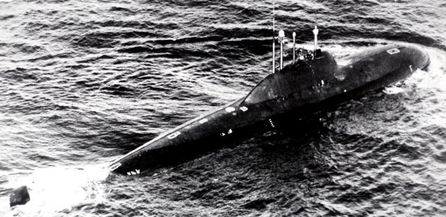

Submaris de la guerra freda

Submaris de la guerra freda |
|---|
|
|
| Nom | Propulsió | Torpedes | Missils |
|---|---|---|---|
|

Alfa |
1 x OK-550 o 1 x BM-40A de 155 MWt (40000 cv) |
18 del tipus Type 53 20 del tipus VA-111 Shkval |
18 del tipus SS-N-15 Starfish |

Oscar II |
2 x OK-650 de 2 x 190 MWt (98000 cv) |
28 del tipus Type 53 28 del tipus Type 65 28 del tipus VA-111 Shkval |
28 del tipus SS-N-15 Starfish 28 del tipus SS-N-16 Stallion 24 del tipus P-700 Granit |

Typhoon |
2 x OK-650 de 2 x 190 MWt (99200 cv) |
28 del tipus Type 53 28 del tipus VA-111 Shkval |
28 del tipus SS-N-15 Starfish 28 del tipus SS-N-16 Stallion 20 del tipus SS-N-20 Sturgeon |
| Unitats totals plantejades: 34 | Unitats totals construides: 27 | ||